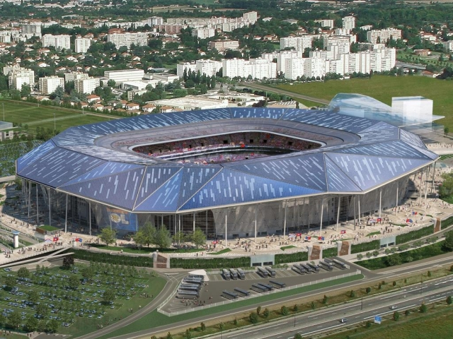

Stade des Lumières (Lyon)
| Surnom | OL Land, Grand Stade |
|---|---|
| Adresse | Décines-Charpieu, site de Montout |
| Propriétaire | VOL Groupe |
| Construction | 2016 |
| Capacité | 59000 |
Le projet d'un nouveau stade appartenant à l'Olympique lyonnais remonte à 2007 et à l'introduction d'OL Groupe en bourse.
Le club souhaitait inaugurer son nouveau stade en 2010, puis en 2012 mais le projet a connu de nombreux retards en raison des oppositions locales et de la difficulté à trouver des financements.
D'abord prévu à Vénissieux, le club ne parvient pas à faire l'acquisition du terrain convoité, en bordure du périphérique lyonnais. La commune de Décines-Charpieu, dans la banlieue lyonnaise, est alors choisie par le Président du Grand Lyon Gérard Collomb pour l'implantation de l'équipement. Jean-Michel Aulas décide de confier la conception de son stade à un architecte renommé pour ses enceintes sportives, le studio américain Populous. Le projet ainsi conçu doit permettre d'accueillir 58 927 spectateurs, capacité qui sera portée par la suite à plus de 59 000 places, selon une annonce de Jean-Michel Aulas le 24 mars 2015, puis 59 500 spectateurs.
Le projet OL Land s'inscrit dans une volonté générale des dirigeants du football français d'améliorer la qualité de leurs installations (avec de nouveaux stades comme à Lille, Nice ou Bordeaux) et de les rapprocher des standards de l'élite européenne. Une volonté largement appuyée par les instances dirigeantes (LFP, FFF) mais également le gouvernement (rapports Séguin et Besson).
Le volontarisme français a assez naturellement débouché sur la candidature à l'organisation de l'Euro 2016, que la France s'est vu confier le 28 mai 2010.
Le stade des Lumières fait partie des dix stades retenus par la France. Troisième stade par la capacité, la nouvelle enceinte de l'Olympique lyonnais est la plus importante parmi celles à construire pour l'évènement. Ainsi, le quotidien gratuit Metro décrivait le futur complexe de Décines comme « l’un des piliers de la candidature française à l’Euro 2016 ». La direction des Gones s’est aussi positionnée pour accueillir l’équipe de France de hockey sur glace en janvier 2017 et également l’équipe de France de rugby à XV lors de la tournée d’automne 2016 ainsi que les demi-finales du top 14 au printemps 2017
D'après Wikipedia